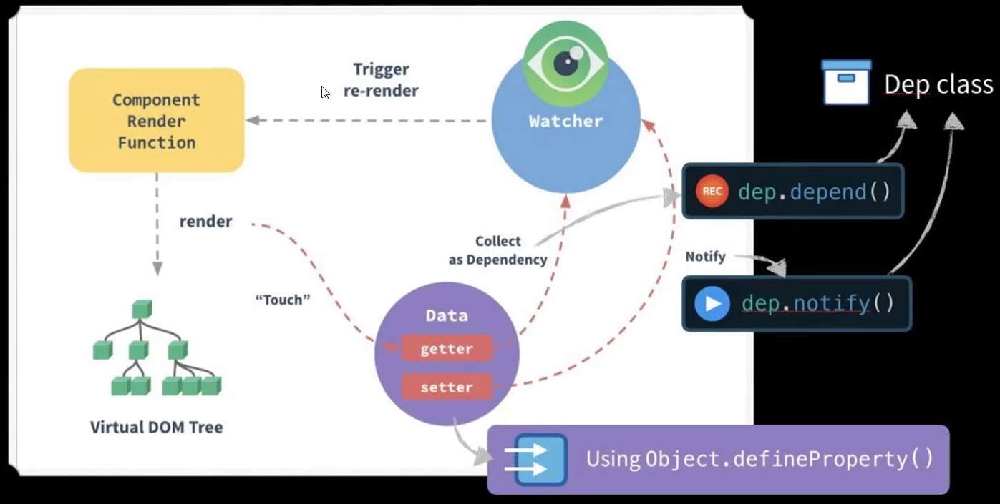

Vue2
将对象属性转为响应式
首先需要将普通对象转为每个层级的属性都是响应式（可被侦测的）的对象，用到三个方法和类：
- 函数 observe：接收对象，判断是否有
__ob__属性（Observer类的实例），如果有直接返回该属性，没有则创建Observer实例返回 - Observer 类：遍历对象属性执行
defineReactive，将一个普通 object 每个层级的属性都变为响应式 - 函数 defineReactive：使用
Object.defineProperty将对象属性变为 getter、setter，并对该子属性也调用observe函数
由此形成递归，这个递归不是自己调用自己，而是由 observe、Observer、defineReactive 三个函数和类循环调用形成（observe => Observer => defineReactive => observe...）
递归调用如下图示：
简单代码如下：
1 | // observe.s |
1 | // Observe.js |
1 | // defineReactive.js |
数组的响应式处理
- 上文写到在
Observer类中遍历对象属性，调用 defineReactive，进而使用 Object.defineProperty 将其转为 getter、setter - 对于数组类型，在 Observer 类中直接遍历其元素调用 observe 函数，形成递归
- 将七个会改变原数组的方法改写，并插入到原型链中
- 以 Array.prototype 为原型创建对象 arrayMethods：
const arrayMethods = Object.create(arrayPrototype) - 在
arrayMethod对象上改写七个数组方法 - 在 Observer 类里判断，如果处理的属性是数组，将改数组的原型改为 arrayMethods：
Object.setPrototypeOf(arr, arrayMethods)相当于arr.__proto__ = arrayMethods - push、unshift、splice 可能往数组里插入新元素，需要对新元素也调用 observe
- 以 Array.prototype 为原型创建对象 arrayMethods：
改变数组原型链：
现在代码如下：
1 | // Observer.js |
1 | // array.js |
Watcher类和Dep类
通过Watcher类和Dep类实现依赖收集、添加订阅、通知更新
- Dep 类：把依赖收集的代码封装成一个 Dep 类，用来管理依赖，每个 Observer 的实例，属性中都有一个 Dep 的实例 (
__ob__.dep) - Watcher 类：Watcher 是一个中介，数据发生变化时通过 Watcher 中转，通知组件
依赖是什么？
依赖就是用到数据的地方，什么地方用到数据，什么地方就叫依赖。
Vue2 中，每个组件有对应的数据，并且每个组件有自己的 Watcher 实例，依赖就是这个 Watcher 实例。
何时收集，何时触发？
在 getter 中收集依赖，在 setter 中触发依赖；
Watcher 实例把自己设置到全局的一个指定位置 Dep.target，然后读取数据，触发数据的 getter；
用 Dep.target 是否存在，判断是否处于依赖收集阶段；
getter 中会从 Dep.target 变量读取正在读取数据的 Watcher 实例，把这个 Watcher 实例收集到 Dep 中；
Dep 使用发布订阅模式，当数发生变化，会循环依赖列表，把列表中所有的 Watcher 实例都通知一遍。getter => dep.depend(); setter => dep.notify(); 数组用 __ob__.dep.notify()
图示如下：

代码：
1 | // Dep.js |
1 | // Watcher.js |
1 | // Observer.js |
1 | // array.js |
1 | // defineReactive.js |
1 | new Watcher(obj, 'a.b.c', (val, oval) => { |
Vue3
主要工作流程
- 响应式简单理解就两步：
track+trigger，中文含义为跟踪 + 触发- 跟踪（track）：也就是依赖收集，对于响应式数据，找到依赖于该数据的副作用函数，然后使用一个方便存储的结构存储对应关系
- 触发（trigger）：当监听到响应式数据变化时，就在之前收集的存储桶里找到相关的副作用函数，然后执行
- 为了自动触发，使用 Proxy 代理响应式对象
ReactiveObject- 将 track 函数放入了 get，使用该数据时会自动触发
track() - 将 trigger 函数放入了 set，使用该数据时会自动触发
trigger()
- 将 track 函数放入了 get，使用该数据时会自动触发
- 为了避免硬编码函数名，每次在 track 时都需要知道副作用函数的名字
- 使用全局变量
activeEffect来代替，及 track 函数每次收集activeEffect变量所指向的函数 （取 activeEffect 变量） - 然后通过
ReactiveEffect注册传递过来的副作用函数，将activeEffect变量指向该副作用函数 （把当前副作用函数赋值给 activeEffect 变量）
- 使用全局变量
下面介绍具体一点的工作链路。

工作过程：
- 首先有一个响应式数据
ReactiveObject{}和依赖于该数据的一个副作用函数Effect() - 将副作用函数传递到
ReactiveEffect函数中 - 注册该副作用函数，将
activeEffect变量指向它 - 执行该副作用函数
- 由于该副作用函数依赖于响应式数据
ReactiveObject，并且已经为ReactiveObject设置了代理拦截操作get，故在读取该值时会触发track函数 - track 函数找到
activeEffect变量，此时指向的正是需要的Effect函数 - 将属性值与副作用函数绑定关系并存储
activeEffect = null方便后续调用
当我们更新了响应式数据中断值后，由于已经为 ReactiveObject 设置了代理拦截操作 set，故会在我们设置该对象属性值时自动触发 trigger 函数
- 找到属性值依赖的副作用函数
- 执行副作用函数完成自动更新
核心代码
核心代码实现如下图：

Vue2 和 Vue3 响应式比较
vue2中采用defineProperty来劫持整个对象，然后进行深度遍历所有属性，给每个属性添加getter和setter，实现响应式vue3采用proxy重写了响应式系统，因为proxy可以对整个对象进行监听，所以不需要深度遍历- 可以动态监听属性的添加
- 可以监听到数组的索引和数组
length属性 - 可以监听删除属性
- vue2 和 vue3 的响应式实现也有类似之处
- 先将数据转换为响应式数据（分别用
defineProperty和Proxy） - 都在 get 中收集依赖，在 set 中触发依赖（依赖分别为 Watcher 实例 和副作用函数）
- 依赖收集过程中都将需要的函数设置为一个全局变量（分别为
Dep.target和activeEffect变量）
- 先将数据转换为响应式数据（分别用